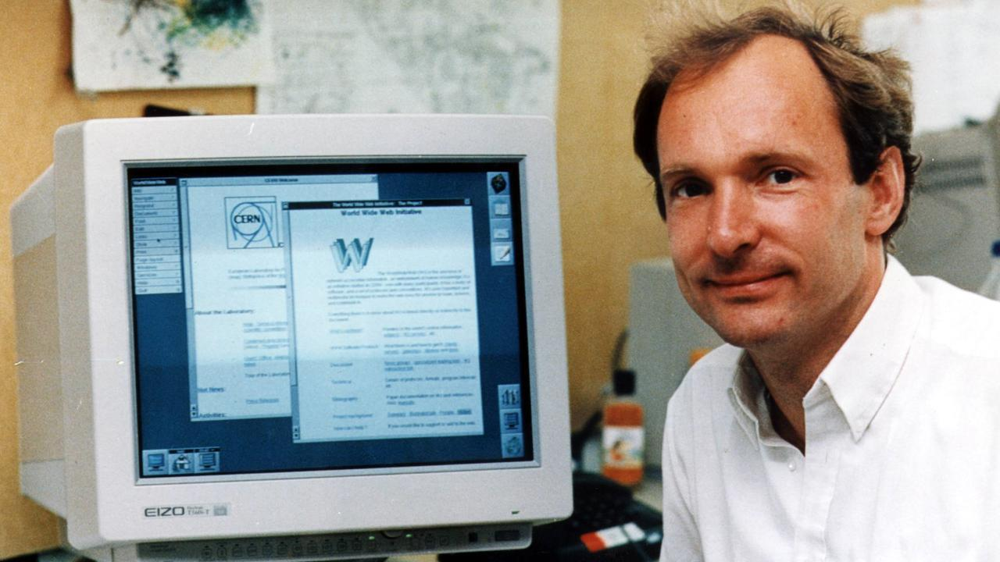

A internet é uma grande rede que conecta computadores e dispositivos no mundo todo. Ela permite a comunicação e a troca de informações entre diferentes redes e sistemas. Já a Web é um serviço que funciona dentro da internet, formado por sites e páginas acessadas por navegadores. Por exemplo, quando usamos o Google Chrome para acessar um site, estamos utilizando a Web. Assim, a internet é a infraestrutura, enquanto a Web é um dos serviços que utiliza essa infraestrutura.
Em 1989, Tim Berners-Lee criou a proposta da World Wide Web (WWW) no CERN.

Em 1990, foi criado o primeiro servidor e navegador da Web, dando início ao seu funcionamento.
Em 1993, o CERN tornou a Web pública e gratuita, contribuindo para sua rápida expansão.
Também em 1993, o navegador Mosaic facilitou o acesso de pessoas comuns à Web.
Desde então, a Internet e a Web evoluíram rapidamente, tornando-se essenciais para comunicação, educação, trabalho e entretenimento.
O número 102 representa cem.
H2O é a fórmula da água.
| Ano | Acontecimento |
|---|---|
| 1969 | Criação da ARPANET |
| 1983 | Adoção do TCP/IP |
| 1989 | Criação da Web |
| Final | Internet e Web |